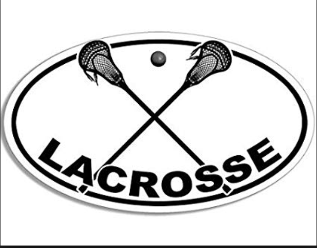

I played Lacroose up until my juinor year of Highschool. I love the feeling of running up field with a stick and ball in hand, dodging opponents and going to the cage. I played midfield for three years in highschool. My junior year I was on varisty but didnt get much playing time. Then before my senior season I suffered an ankle injury and decided not to play. I still have the love for the sport and an appreciation of what it takes to be good at the game.
Fishing
Skiing
Home